Built from the start
Co-founder and inventor in startup companies, taking ideas through development.
Case and figures to be completed by Ronny
Medical devices · Health · Biotech · FoodTech
I help life-science founders turn promising technology into approved products, real sales and companies worth acquiring. I have sat in your chair: as CEO, co-founder and inventor.
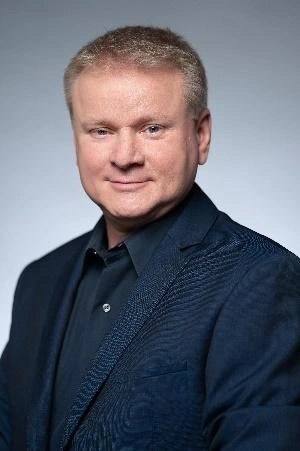
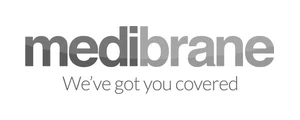
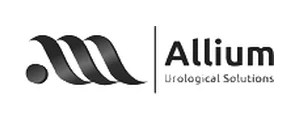
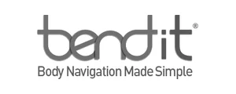
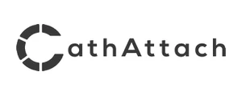
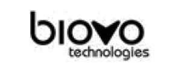
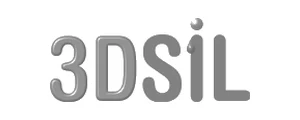
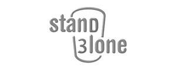
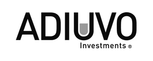
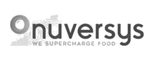
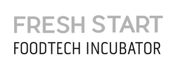
The hard part starts when it has to become a product, pass a regulator and win its first customers.
From prototype to a product physicians use.
From clinical need to a working business.
From research result to commercial strategy.
From formulation to market penetration.
Are you an investor? If you back companies in these fields and need an operator's perspective, let's talk.
Join at any stage. We work on what stands between you and the next one.
Shape the product around a clinical and commercial need.
Plan and move through regulatory approval.
Choose the market, the entry strategy and the first partners.
Build the sales force and increase revenue and profitability.
Prepare for strategic alliances, mergers and acquisition.
The decisions you face are ones Ronny has had to make.
Co-founder and inventor in startup companies, taking ideas through development.
Case and figures to be completed by Ronny
CEO of established companies, through approvals, product launches and sales ramp-up.
Case and figures to be completed by Ronny
A track record that includes exits, M&A transactions and mergers.
Case and figures to be completed by Ronny
Ronny Barak has spent 25 years in life science, medical, biotechnology and foodtech companies, in general management, business development, sales and marketing.
That mix of scientific, clinical and business understanding is what you get at the table, together with a network built along the way. The work is lean, direct and focused on solving what is in your way.
BSc Chemistry · MBA · CEO · Co-founder · Inventor
A senior partner for strategy, regulation, market entry and the decisions that cannot wait.
Hands-on support in business development, building a sales force and running the launch.
Investment model to be confirmed by Ronny
Bring it to a free 30-minute call. Send three lines about your company and suggest two times that suit you.